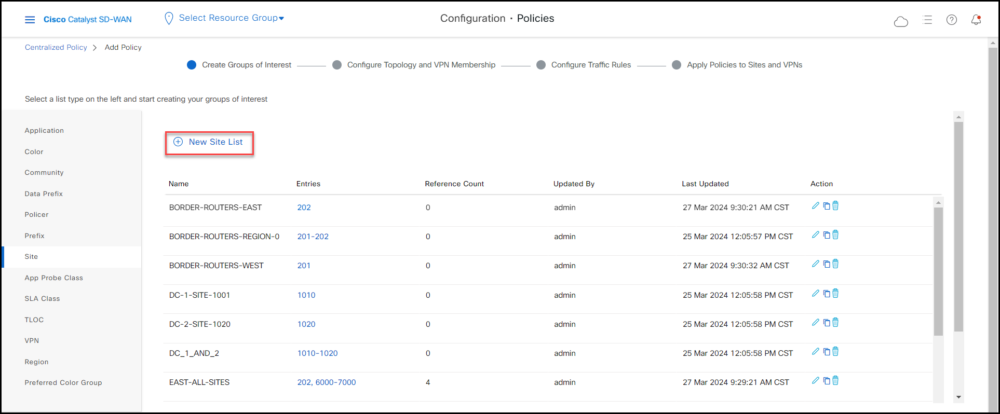
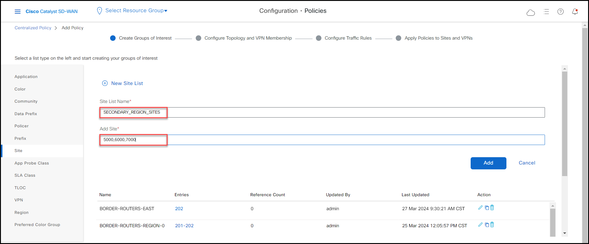
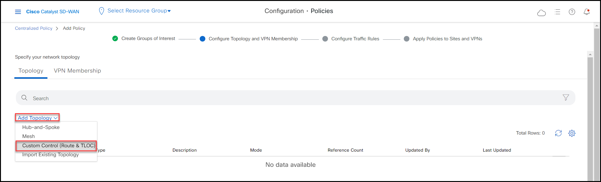
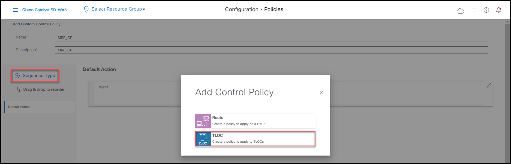
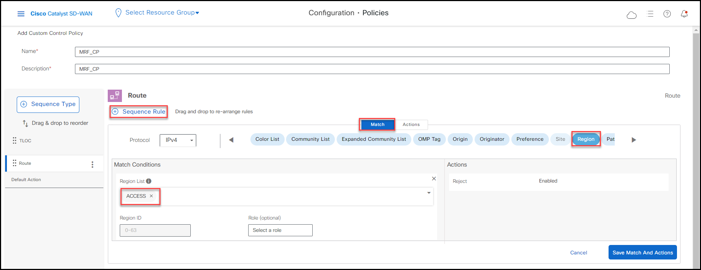
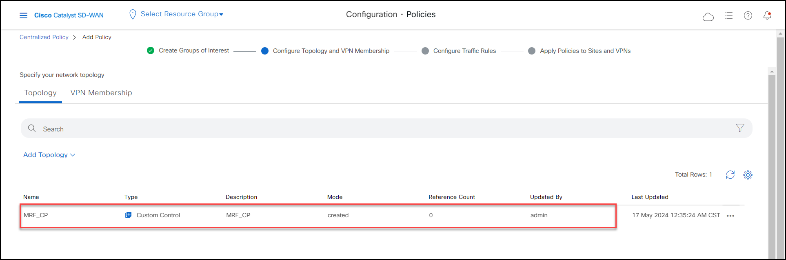
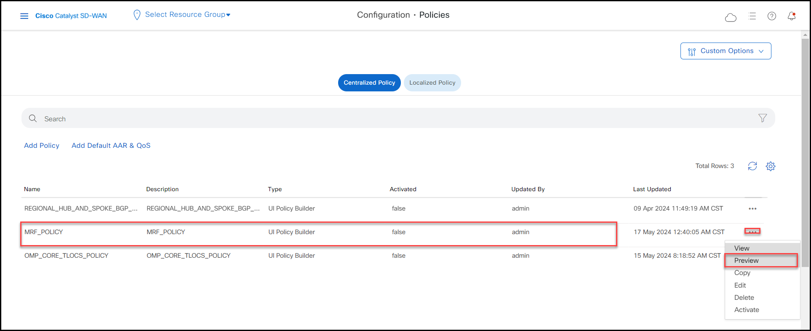
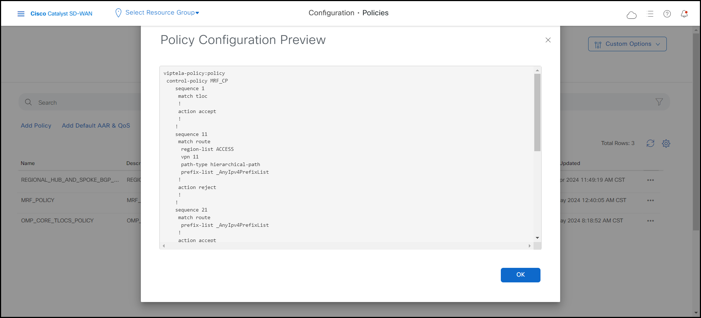
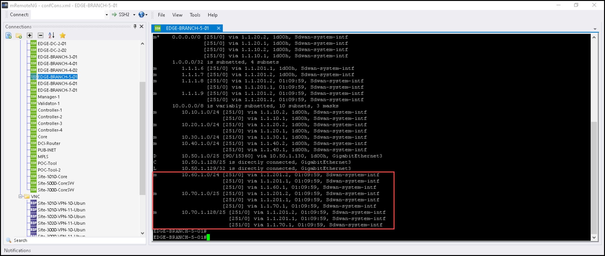
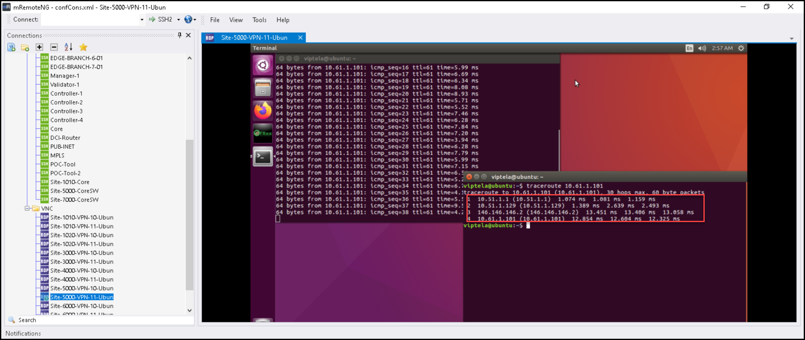

Task 8 - MRF Policy
In this task you will create a Multi-Region Fabric (MRF) Control Policy that will steer VPN 11 traffic through the direct path over the Secondary Region while all other VPN 10 traffic will ECMP through all paths.
Step 1: Create a New Control Policy
Go to Configuration > Policies > Add Policy

On the left-side pane from the first section, select Region and then click ‘New Region List’

Name this Region List as ACCESS with the regions 1,2.

Click ‘Add’.
Also, let’s create a Site List, so click on the left-side pane ‘Site’ and then ‘+New Site List’.

Name it as SECONDARY_REGION_SITES with the Sites 5000,6000,7000

Click ‘Add’ and then ‘Next’.
Now, click Add Topology and select Custom Control (Route & Tloc)

Name this Control Policy as MRF_CP.

Click ‘+ Sequence Type’ and then select ‘TLOC’

Next, click on ‘+ Sequence Rule’, and select ‘Actions’ and finally enable ‘Accept’

Click ‘Save Match and Actions’.
Now, again click ‘+ Sequence Type’, but this time select ‘Route’

Click on ‘+ Sequence Rule’, and under the ‘Match’ section, select ‘Region’ with the Region List ACCESS

Also, add a match for ‘VPN’ for VPN ID 11

Next, add one more match for ‘Path Type’ and select HIERARCHICAL

Now click ‘Actions’ and leave the ‘Reject’ option enabled.

Click 'Save Match and Actions'
Click again on ‘+ Sequence Rule’, and do not select any match.

Next, click ‘Actions, and enable ‘Accept’.

Click ‘Save Match and Actions’.
Finally, click ‘Save Control Policy’.
You will be returned to the next ‘Configure Topology and VPN Membership’ where now we can see the Control Policy we just created.

Click ‘Next’, and ‘Next’ once again till you get to the ‘Apply Policies to Sites and VPNs’ section.
Name, this Centralized Policy as MRF_POLICY, then click ‘+ New Site/Region List’ and enable ‘Region’ with ACCESS as the Outbound Region List as follows.

Click 'Add'.

Finally click ‘Save Policy’.
Step 2: Understand, Activate and Confirm MRF Policy
Before we activate this new MRF Policy, go to Configuration > Policies and click ‘Preview’ on the MRF_POLICY policy we just created

Try to understand such policy first, but at the end, what we are doing with the MRF Control Policy is to not advertise prefixes from Access regions 1 and 2 with a hierarchical path and from VPN 11 to Sites 5000, 6000 and 7000 only.

This a good use-case example, where we do want VPN 10, where we have our critical Corporate traffic, to go through the Core or the direct Path with ECMP, while only allowing our Guest Traffic in VPN 11 to go through the direct path on only these sites with Secondary Regions, without affecting the rest of the access sites. This with the intent to reduce costs and bandwidth at the Core.
Activate the Policy the MRF_POLICY we just created.

Click ‘Activate’ and ‘Activate’ once again.
Now, SSH into EDGE-BRANCH-5-01 and issue the show command show ip route vrf 10.

As we can see on the output above, we do have all prefixes from the East Region using all paths available for ECMP, being through the Core or through the Direct Path.
Now, run the show command show ip route vrf 11

Above we see now, that for VPN 11 we can only communicate to the East Region using the direct path as defined in the MRF Policy.
We can confirm the same by running a trace from the Site-5000-VPN-10-Ubun Ubuntu host to the 10.60.1.101 that lives in Site 6000 in service VPN 10

This time, because the ECMP hash, the traffic is going through the Core but it may go through the Direct Path as well.
Finally, let’s repeat the same tests but now from the Site-5000-VPN-11-Ubun Ubuntu host to the 10.61.1.101 that lives in Site 6000 in service VPN 11.
